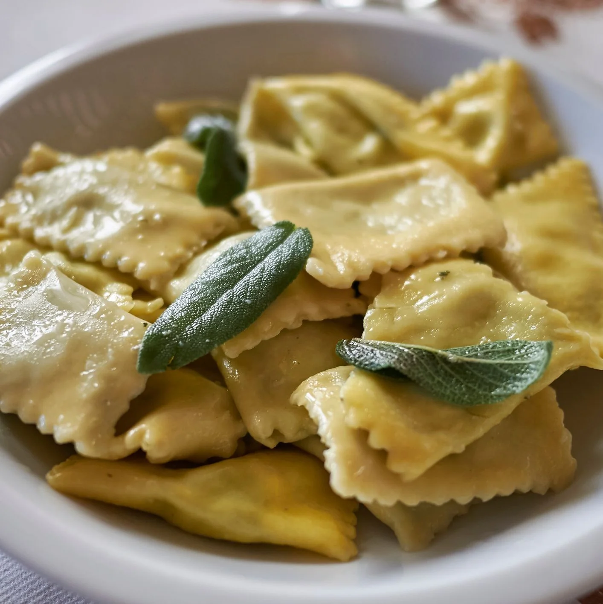

Recomendado · Pasta
Ravioles de ricotta · “Nivel abrazo”
Si te gusta la pasta casera, este es el plato que te hace decir: “ok, valió la pena”.
Bienvenido a losjausismisterfood, un blog de reseñas gastronómicas creado como proyecto universitario. Aquí analizo restaurantes, cafeterías y lugares para comer desde el punto de vista de un cliente normal.
Un blog ficticio de reseñas gastronómicas usado como práctica de diseño y programación web.
Cada reseña del sitio está pensada para responder tres preguntas simples:
Puedes ver la lista completa de reseñas en la pestaña “Reseñas” del menú superior.
Lo más importante, sin novela.
Ejemplos para que tu página se vea más “viva”.
Si te gusta la pasta casera, este es el plato que te hace decir: “ok, valió la pena”.
Porción generosa, papas crocantes y salsas que no vienen a “rellenar”, vienen a ganar.
Si quieres cerrar una tarde con broche de oro, este combo es el “GG” del día.
Pon estas imágenes en /img/ y listo.
Tip: usa fotos horizontales para que se vean finas en el diseño.
Relleno elegante para un proyecto universitario.
Buen ambiente, buena luz y el plato estrella realmente se siente artesanal.
Porción grande, papas top y las salsas caseras son el gol del partido.